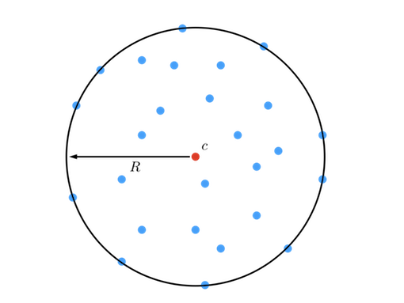
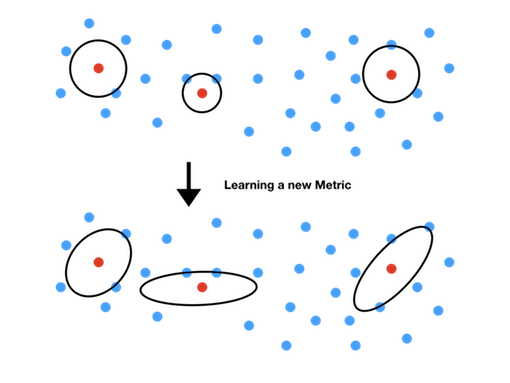
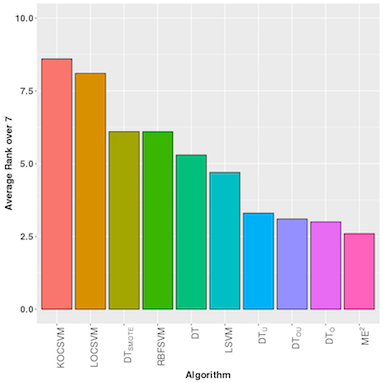

MEE: Metric Learning and Classification
When we are dealing with frauds or unbalanced data, we have only few informations or few examples from the minority class (i.e. the fraud), so it is important to take into accont all of the informations we can extract from the examples of the minority class.
The idea of the presented method comes from the Minimum Including Ball problem, i.e. finding the smallest circle and its center such that all the data lie in the ball.

The Minimum Including Ball problem.
Using the assumption that two frauds can be closed to each other, we have transformed the Minimum Including Ball Problem into a Maximum Excluding Ball Problem. In other words, we are learning, around each examples of the minority class, a ball which excludes the example of the majority class.

Learning the largest excluding area around each examples of the minority class (in red) without (top) and with (bottom) learning a metric.
We also learn a metric \(\mathbf{M}\) in order to learn ellipsoids rather than balls in the original space. By doing so, we are able to control both size and shape of our ellipsoids. \[ \Vert \mathbf{x}-\mathbf{c} \Vert_{\mathbf{M}}^2=(\mathbf{x}-\mathbf{c})^T \mathbf{M} (\mathbf{x}-\mathbf{c}).\]
Note the algorithm is close to a Decision Tree algorithm, the difference lies in the learned areas around each positive
examples. Furthermore, there is "pruning" phase in the algorithm. We can write the minimization problem as follows: \[ \underset{R,\mathbf{M}}{min} \; \dfrac{1}{n}\sum_{i=1}^n \xi_i + \mu(B-R)^2 + \lambda \Vert \mathbf{M}-\mathbf{I} \Vert_F^2, \]
\[s.t. \; \Vert \mathbf{x}_i-\mathbf{c} \Vert_{\mathbf{M}}^2 \ge R-\xi_i, \; \forall i=1,...,n,\]
\[\xi_i \ge 0, \; \forall i=1,...,n, \]
\[0\le R \le B,\] where \(R\) denotes the radius of the ellipsoid centered at \(\mathbf{c}\), \(\xi_i\) denotes the slack variable and \(\mathbf{M}\) the metric to learn. The problem is also composed of three hyper-parameters: \(B\), \(\mu\) and \(\lambda\) which control both size and shape of the ellipsoid.
We have compared this algorithm on several imbalanced dataset to other machine learning algorithms as Decision Trees combined with sampling methods and SVM algorithms. We have shown that this algorithm performed at least as well as the state of the art algorithms.

Average Rank of all algorithms over the seven used datasets for the experiments.
Theoretical guarantees about this algorithm have been derived which ensure that, in test phase, the ellipsoid will contain only few examples of the majority class.